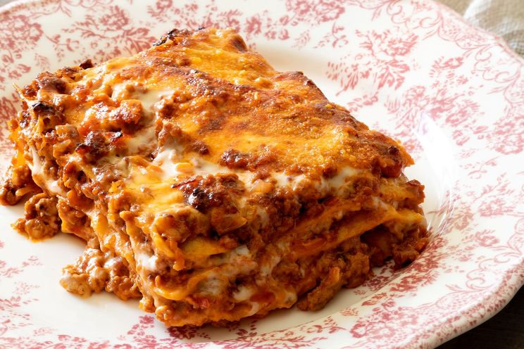

Lasagna Bolognese Recipe

Description
Lasagna Bolognese is definitely the classic and original one, but today we offer a simpler and faster version.
Our baked lasagna will amaze you with its goodness and ease of preparation! To make them, we have prepared an express ragout:
a tasty meat sauce that cooks in just 45 minutes, unlike the classic ragout that involves long cooking and remains much slower,
to facilitate the cooking of the pasta. Apart from that, the main difference lies in the fact that these are lasagna without
béchamel sauce, enriched with plenty of cooked ham and lots of mozzarella cheese to still ensure a tasty first course with a
stringy effect that the whole family will enjoy. Make them for Sunday lunch, too, and win over your guests with little effort!
Ingredients
- Fresh egg lasagna 320 g
- Cooked ham 350 g
- Mozzarella 300 g
- Grana Padano DOP
- Ground beef 350 g
- Tomato puree 1 l
- Golden onions 1
- Red wine 60 g
- Water 500 ml
- Extra-virgin olive oil
Steps
- To prepare the baked lasagna first peel the onion and chop it finely. Arrange it in a large pot with some oil and let it wilt for a few minutes at medium temperature, then add the mince as well.
- Raise the flame and brown, stirring and shelling the meat with a wooden spoon. When well browned, deglaze with the red wine and let the alcohol part evaporate. Lower the flame again and then add the tomato puree.
- Rinse the pitcher using half a liter of water and pour it into the pot. Add a pinch of salt and stir again. Let it cook for 45 minutes; after this time has elapsed, the sauce should not have congealed much.
- Now cut the mozzarella into small pieces. Equip yourself with a large 30x20 cm lasagna pan and spread an overflow of sauce on the bottom. Make a first layer of pasta sheets, overlapping them slightly.
- Add more sauce, then grated Grana Padano DOP and mozzarella cubes.
- Place ham slices on top and add a little more sauce. Place a layer of pasta on top. Proceed in this way until all the ingredients are finished.
- Remember that the last layer will consist only of pasta, sauce, grated cheese and mozzarella cheese. Bake in a static oven preheated to 180° for about 45 minutes. Then take it out of the oven and let it rest a few minutes before cutting and serving your rich baked lasagna!
Reference: "Lasagne al forno" by Giallo Zafferano